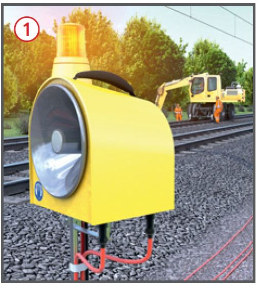
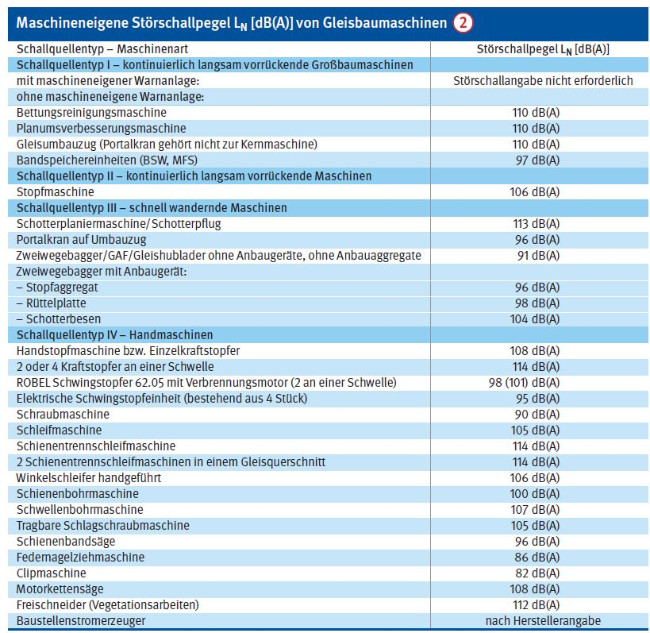
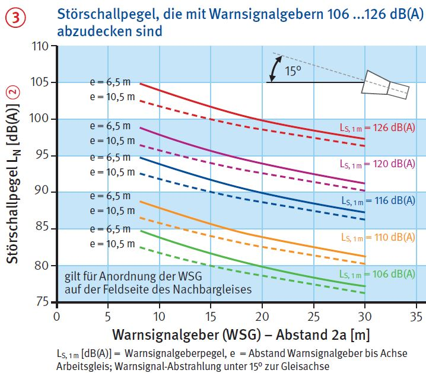

Arbeiten im Gleisbereich
Automatische Warnsysteme
Wahrnehmbarkeit akustischer Warnsignale
|
|

Gefährdungen
- Wenn Warnsignale nicht hörbar
sind, können Personen von
Schienenfahrzeugen erfasst und
überfahren werden.
Allgemeines
- Um die Hörbarkeit der Warnsignale
zu gewährleisten, muss
die Aufstellung der Warnsignalgeber
bei automatischen Warnsystemen
für Baustellen im
Gleisbereich sorgfältig akustisch
geplant werden.
- Die Planer müssen vom
Hersteller geschult sein.
- Die für den Bahnbetrieb zuständige
Stelle (BzS) kann weitere Auflagen verlangen.
Erforderlicher Signalpegel
- Der Signalpegel muss auf der
gesamten Baustelle am Ohr der
Beschäftigten um mindestens
+ 3 dB(A) über dem Störschallpegel
liegen.
- Grundstörschallpegel (z. B. 90,
95, 97 dB(A)) über ein kollektives
automatisches Warnsystem
abdecken
 .
.
- Signalgeber mit max. 106 dB(A)
Signalpegel dürfen beim Einsatz
von Maschinen gemäß Störschallkataster
nicht eingesetzt
werden.
- Spitzen-Störschallpegel von
Maschinen durch maschineneigene
Warnanlagen oder mobile
funkgesteuerte Signalgeber auf
Maschinen abdecken.
- Wahrnehmbarkeitsprobe vor
Ort diese unter ungünstigsten
Arbeits- und Umgebungsbedingungen
inkl. Gehörschutz durchführen.
Schutzmaßnahmen
Aufgaben des ausführenden Unternehmens
- Maschinen ohne maschineneigenes Warnsystem:
- Angabe der Störschallpegel an
die für den Bahnbetrieb zuständige
Stelle (DB: Seite 1 des
Sicherungsplans)
 .
.
- Großbaumaschinen (Bettungsreinigung,
Planumsverbesserung,
Umbauzug) mit maschineneigenen
Warnsystemen ausrüsten,
auf der Baustelle Funkansteuerung
durch die feldseitige
Warnanlage vom Sicherungsunternehmen
herstellen lassen.
- Zweiwegebagger
- mit Aufstellvorrichtungen für
mobile funkangesteuerte
Signalgeber ausrüsten und
- vor Ort mobile Signalgeber
vom Sicherungsunternehmen
aufsetzen lassen.
- Bei lauten Handmaschinen
(z.B. Trennschleifer) ist an der
Arbeitsstelle gegebenenfalls ein
Überwachungsposten mit zusätzlichem
Starktonhorn erforderlich
(Warnung vor Fahrten im
Nachbargleis).
- Bei zusätzlichen Maschinen
oder Maschinen mit Störschallpegel
größer als geplant: Mitteilung
an die Sicherungsaufsicht
machen, damit der Signalpegel
angepasst werden kann bzw.
entsprechende Maßnahmen
durchgeführt werden können.
- Laute Handmaschinen (z. B.
Flex, Schleifmaschine) erst in
Betrieb nehmen, wenn an der
Arbeitsstelle ein Überwachungsposten
mit zusätzlichem Starktonhorn
eingesetzt ist (Warnung
vor Fahrten im Nachbargleis).
Aufgaben des Sicherungsunternehmens
- Akustische Projektierung für
Signalgeberpegel u. Aufstellabstand
 anhand der vom
Bauunternehmen genannten
Störschallpegel vornehmen .
anhand der vom
Bauunternehmen genannten
Störschallpegel vornehmen .
- Großbaumaschinen mit
maschineneigenen Warnsystemen:
auf der Baustelle Funkansteuerung
von feldseitiger Warnanlage
aus herstellen und
Überwachungsposten für Seitenläufer
einsetzen.
- Maschinen ohne maschineneigene Warnsysteme: bei feldseitigem
Warnsystem mit Signalgebern
126 dB(A) im Abstand
von 30 m bei Aufstellung unter
15° zur Gleisachse
- Störschallspitzen der Maschine > 97 dB(A) feststellen und
- mobile funkgesteuerte Signalgeber
auf der Maschine einsetzen.
- Überwachungsposten für
Seitenläufer einsetzen.
Störschallkataster
- Bei den Schallquellentypen I,
II, III wurde der Störschall 1 m
neben der Maschine und 0,8 m
sowie 1,6 m über SO des Arbeitsgleises
gemessen (Maschine in
Betrieb).
- Bei Schallquellentyp IV wurde
der Störschall am Ohr des Bedieners
in Arbeitshaltung gemessen
(Maschine in Betrieb).
- Vor Ort stets eine Wahrnehmbarkeitsprobe
durchführen.
- Mögliche Zugfahrten in einem
dritten Gleis mit einem Störschallpegel von 100 dB(A) berücksichtigen.


07/2021